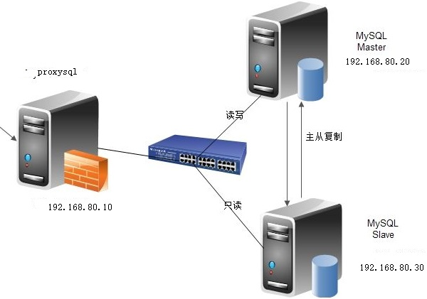

复制加密
基于SSL的加密
在默认的主从复制过程或远程连接到MySQL/MariaDB所有的链接通信中的数据都是明文的，外网里访问数据或则复制，存在安全隐患。通过SSL/TLS加密的方式进行复制的方法，来进一步提高数据的安全性
[参考]https://mariadb.com/kb/en/library/replication-with-secureconnections/
实现过程：
主服务器开启SSL：[mysqld] 加一行ssl
主服务器配置证书和私钥；并且创建一个要求必须使用SSL连接的复制账号
从服务器使用CHANGER MASTER TO 命令时指明ssl相关选项
1. 生成加密证书
生成私钥
(umask 066;openssl genrsa 2048 > cakey.pem)
生成ca证书
openssl req -new -x509 -key cakey.pem -out cacert.pem -days 3650
生成私钥并生成证书
openssl req -newkey rsa:2048 -days 365 -nodes -keyout master.key > master.csr
openssl req -newkey rsa:2048 -days 365 -nodes -keyout slave.key > slave.csr
openssl x509 -req -in master.csr -CA cacert.pem -CAkey cakey.pem -set_serial 01 > master.crt
openssl x509 -req -in slave.csr -CA cacert.pem -CAkey cakey.pem -set_serial 02 > slave.crt
openssl x509 -in master.crt -noout -text
2. 在主服务器添加如下字段
[mysqld]
log_bin
server_id=1
ssl
ssl_ca=/etc/my.cnf.d/ssl/cacert.pem
ssl_cert=/etc/my.cnf.d/ssl/master.crt
ssl_key=/etc/my.cnf.d/ssl/master.key
3. 在主服务器授权一个支持SSL的用户
GRANT REPLCATION SLAVE ON *.* TO 'USER'@'HOST' IDENTIFIED BY 'PASSWORD' REQUIRE SSL;
4. 从服务器启动复制进程
mysql> CHANGE MASTER TO
MASTER_HOST='192.168.80.3',
MASTER_USER='repluser',
MASTER_PASSWORD='centos',
MASTER_LOG_FILE='mariadb-bin.000001',
MASTER_LOG_POS=245,
MASTER_PORT=3306,
MASTER_SSL=1,
MASTER_SSL_CA = '/etc/my.cnf.d/ssl/cacert.pem',
MASTER_SSL_CERT = '/etc/my.cnf.d/ssl/slave.crt',
MASTER_SSL_KEY = '/etc/my.cnf.d/ssl/slave.key';
可以将其写在配置文件
复制的监控和维护
(1) 清理日志
PURGE { BINARY | MASTER } LOGS { TO 'log_name' | BEFORE datetime_expr } RESET MASTER RESET SLAVE
例： purge master logs to 'mariadb-bin.000006' 删除6之前的日志
(2) 复制监控
SHOW MASTER STATUS
SHOW BINLOG EVENTS
SHOW BINARY LOGS
SHOW SLAVE STATUS
SHOW PROCESSLIST
(3) 从服务器是否落后于主服务
Seconds_Behind_Master: 0
(4) 如何确定主从节点数据是否一致
percona-tools
(5) 数据不一致如何修复
删除从数据库，重新复制
MySQL读写分离
mysql-proxy:Oracle
Atlas：Qihoo
dbproxy：美团
Cetus：网易乐
Amoeba
Cobar：阿里巴巴，Amoeba的升级版 Mycat：基于Cobar
ProxySQL
ProxySQL： MySQL中间件，两个版本：官方版和percona版，percona版是基于官方版基础上修改，C++语言开发，轻量级但性能优异(支持处理千亿级数 据)，具有中间件所需的绝大多数功能，包括：
多种方式的的读/写分离
定制基于用户、基于schema、基于语句的规则对SQL语句进行路由
缓存查询结果
后端节点监控

ProxySQL：
主配置文件：/etc/proxysql.cnf
服务脚本：/etc/init.d/proxysql
主程序：/usr/bin/proxysql
默认监听
6032/tcp(ProxySQL的管理端口)
6033/tcp(ProxySQL对外提供服务的端口)
1. 安装配置
基于YUM仓库安装
cat <<EOF | tee /etc/yum.repos.d/proxysql.repo
[proxysql_repo]
name= ProxySQL YUM repository
baseurl=http://repo.proxysql.com/ProxySQL/proxysql-1.4.x/centos/\$releasever
gpgcheck=1
gpgkey=http://repo.proxysql.com/ProxySQL/repo_pub_key
EOF
使用yum install proxysql安装
基于RPM下载安装
https://github.com/sysown/proxysql/releases
2.准备：实现读写分离前，先实现主从复制
注意：slave节点需要设置read_only=ON
3.启动ProxySQL：
service proxysql start
3. 使用mysql客户端连接proxysql的6032端口，默认的管理员密码是admin
mysql -uadmin -padmin -P6032 -h127.0.0.1
4. 向proxysql添加MySQL节点，以下操作不需要use main也可成功
mysql> INSERT INTO mysql_servers(hostgroup_id,hostname,port)VALUES(10,'192.168.80.20',3306);
mysql> INSERT INTO mysql_servers(hostgroup_id,hostname,port)VALUES(10,'192.168.80.30',3306);
mysql> load mysql servers to runtime;
mysql> save mysql servers to disk;
5.添加监控后端节点的用户。ProxySQL通过每个节点的read_only值来自动调整它们是属于读组还是写组
在主节点授权一个用户
mysql> GRANT REPLICATION CLIENT ON *.* TO 'monitor'@'192.168.80.%' IDENTIFIED BY 'monitor';
6. 在proxysql节点上配置监控，并加载保存至磁盘
mysql> set mysql-monitor_username='monitor';
mysql> set mysql-monitor_password='monitor';
mysql> load mysql variables to runtime;
mysql> save mysql variables to disk;
7.在proxysql节点上配置分组信息
需要修改的是main库中的mysql_replication_hostgroups表
该表有3个字段： writer_hostgroup，reader_hostgroup，comment,指定写组的id为10，读组的id为20
mysql> insert into mysql_replication_hostgroups values(10,20,"test");
mysql> load admin variables to runtime;
mysql> save admin variables to disk;
8.查看状态
Monitor模块监控后端的read_only值，按照read_only的值将节点自动移动到读/写组
SELECT hostgroup_id,hostname,port,status,weight FROM mysql_servers;
| hostgroup_id | hostname | port | status | weight |
| 10 | 192.168.80.20 | 3306 | ONLINE | 1 |
| 20 | 192.168.80.30| 3306 | ONLINE | 1 |
监控模块的指标保存在monitor库的log表中
查看监控连接是否正常的 (对connect指标的监控)：(如果connect_error的结果 为NULL则表示正常)
mysql> select * from mysql_server_connect_log;
查看监控心跳信息 (对ping指标的监控)：
mysql> select * from mysql_server_ping_log;
查看read_only和replication_lag的监控日志
mysql> select * from mysql_server_read_only_log;
mysql> select * from mysql_server_replication_lag_log;
9.在主服务器节点授权一个配置发送SQL语句的用户
GRANT ALL ON *.* TO 'sqluser'@'192.168.80.%' IDENTIFIED BY '123456';
10.在proxysql节点上，将sqluser用户添加到mysql_user表中，default_hostgroup默认组设置为写组10,当读写分离的路由规则不符合时，会访问默认组的数据库
mysql> insert into mysql_users(username,password,default_hostgroup) values('sqluser','123456',10);
mysql> load mysql users to runtime;
mysql> save mysql users to disk;
11.使用sqluser用户测试是否能路由到默认的10写组实现读、写数据
mysql -usqluser -p123456 -P6033 -h127.0.0.1 -e 'select @@server_id'
mysql -usqluser -p123456 -P6033 -h127.0.0.1 -e 'create database testdb
12. 在proxysql节点上，配置路由规则，实现读写分离
与规则有关的表：mysql_query_rules和mysql_query_rules_fast_routing，后者是前者的扩展表，1.4.7之后支持
插入路由规则：将select语句分离到20的读组，select语句中有一个特殊语句SELECT...FOR UPDATE它会申请写锁，应路由到10的写组
mysql> insert into mysql_query_rules (rule_id,active,match_digest,destination_hostgroup,apply) VALUES(1,1,'^SELECT.*FOR UPDATE$',10,1),(2,1,'^SELECT',20,1);
mysql> load mysql query rules to runtime;
mysql> save mysql query rules to disk;
注意：因ProxySQL根据rule_id顺序进行规则匹配，select ... for update规则的 rule_id必须要小于普通的select规则的rule_id
13.测试读操作是否路由给20的读组
mysql -usqluser -p123456 -P6033 -h127.0.0.1 -e 'select @@server_id'
路由的信息：查询stats库中的stats_mysql_query_digest表
SELECT hostgroup hg,sum_time, count_star, digest_text FROM stats_mysql_query_digest ORDER BY sum_time DESC;
路由规则
select rule_id,active,match_digest,destination_hostgroup,apply from mysql_query_rules;